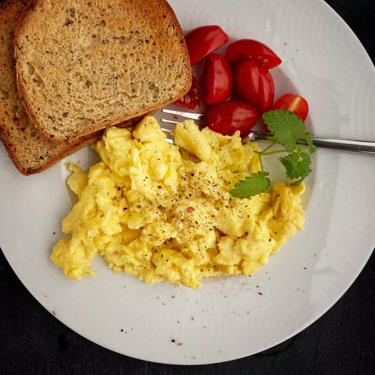

Scrambled Eggs

These are the traditional scrambled eggs that everyone loves. It's a great and easy recipe anyone could learn!
Ingredients
- 4 eggs
- 1/4 cup milk
- 1 teaspoon salt
- 1 teaspoon ground black pepper
Steps
- In a medium bowl, whisk together the eggs and milk using a fork. Whisk in the salt and pepper
- Heat a small non-stick pan over medium heat. Pour the egg mixture into the pan, and cook. Stir, scrape, and cut up the eggs while cooking until no liquid remains. Enjoy!